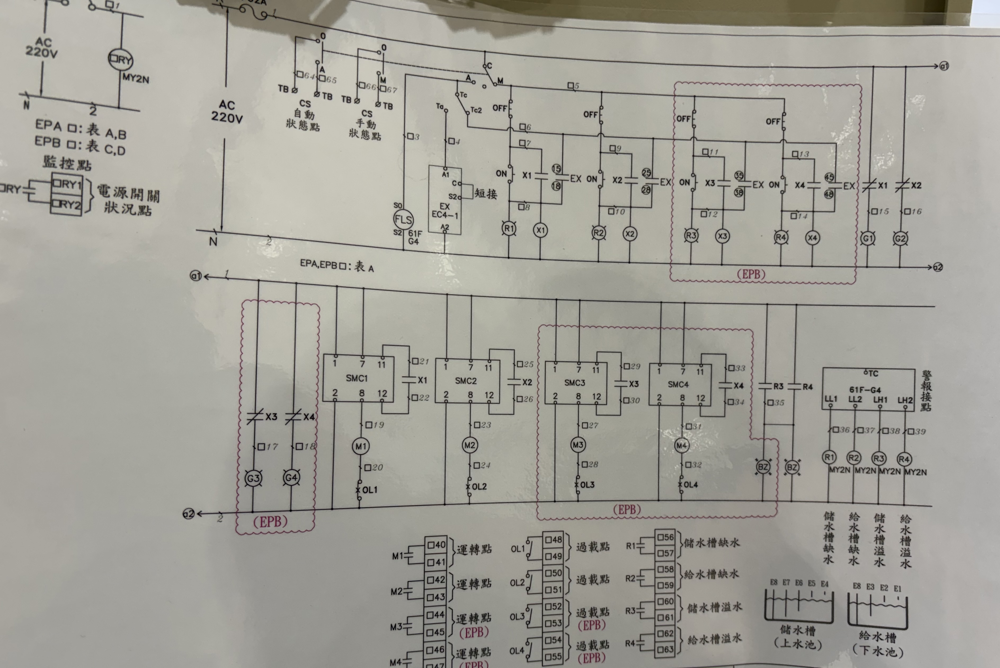
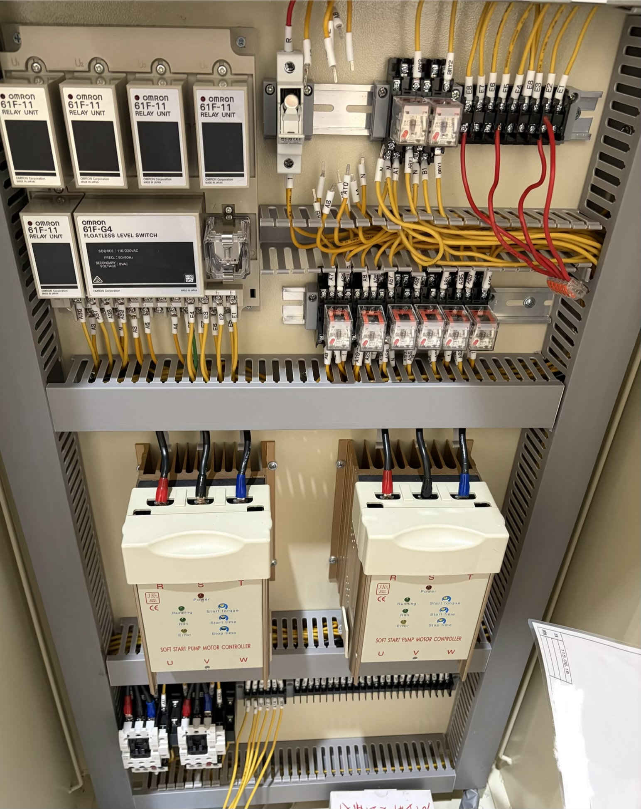
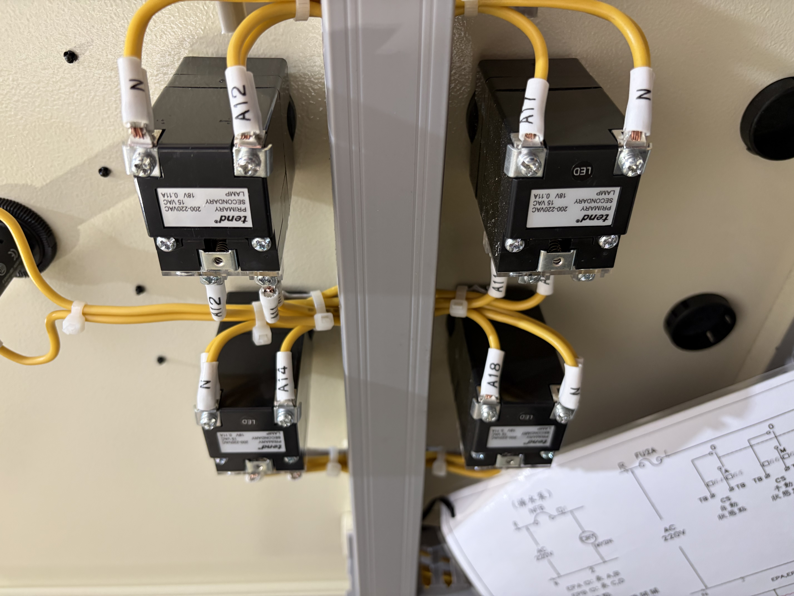
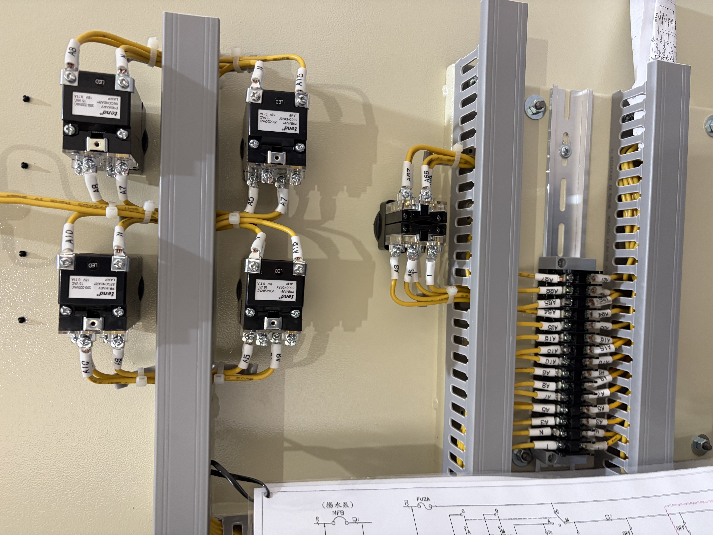

配電盤製作與現場施工
公司接的水位交替啟動控制盤案子,兩面盤(A盤/B盤),四顆軟啟動器控制四顆抽水馬達。我負責照公司給的單線圖跟控制圖,把兩面盤的元器件裝好、線接好。這是我目前獨立做過邏輯最複雜的一個案子。
用 OMRON 61F-G4 無浮球水位開關偵測儲水槽跟給水槽的水位,控制四顆抽水馬達交替抽水,缺水(LL)或溢水(LH)會觸發警報跟保護動作。馬達前面接 SMC 軟啟動器,啟動時電流不會衝太大。
整組迴路依負載拆成 A盤/B盤 兩面(圖上寫 EPA/EPB)。電路是公司圖面部門畫的,不是我畫的——我做的是照圖把兩面盤的元器件裝上去、繼電器跟軟啟動器接好線、端子壓接、標線號。這就是照圖配盤這件事實際在做的內容。
公司接過的盤子裡有迴路規模更大的,但大多是同一種接法重複好幾組;這面盤 A/B 交替加上互鎖(EX)邏輯變化比較多,是我自己做過邏輯最複雜的一個,不是元件數量最多的一個。
| 類型 | 現職工作案例 |
|---|---|
| 我的角色 | 依圖施工配線,不含電路設計 |
| 核心元件 | OMRON 繼電器/水位開關、SMC 軟啟動器 |
| 圖面 | 單線圖、控制圖(公司提供) |
| 盤面數 | 2 面(A/B 交替) |
控制圖上 X1~X4、R1~R4 這些繼電器彼此連動,配合 ON/OFF 按鈕跟 EX(互鎖)迴路,決定兩面盤什麼時候交替、什麼時候互鎖。動工前要先把整份圖的邏輯看懂,不然會接錯。

盤內裝 OMRON 61F-11 繼電器組跟 61F-G4 水位開關,四組 SMC 軟啟動器控制四顆馬達。配線照線號標示一條一條壓接,盤面要整齊,之後維護才好追。

儲水槽/給水槽各設缺水(LL)、溢水(LH)偵測點,配過載保護(OL1~OL4)跟警報繼電器(R1~R4,MY2N)。異常狀況要能正確觸發保護,不能誤動作也不能漏動作。

配線完依圖逐點檢查、量測迴路,再送電測試,確認繼電器動作、馬達轉向、保護迴路都對,現場排除配線異常。

| 感測與保護 | OMRON 61F-G4 無浮球水位開關、缺水/溢水偵測、OL 過載保護 |
|---|---|
| 控制與驅動 | OMRON 61F-11 繼電器、SMC 軟啟動器、馬達啟停控制 |
| 圖面與施工 | 單線圖/控制圖判讀、控制迴路配線、端子壓接、線號標示 |
OMRON 61F-11 · OMRON 61F-G4 · SMC 軟啟動器 · MY2N 繼電器 · 單線圖 · 控制圖